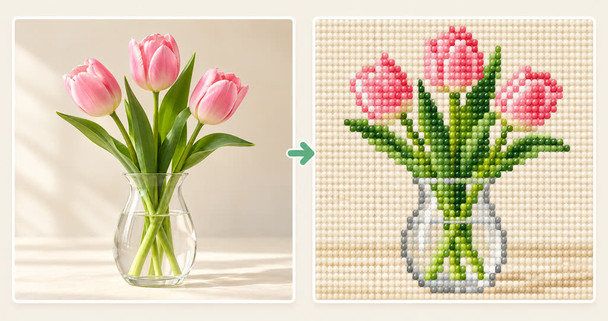

方案 01 · FLAT FLOW
去卡片化：一条连续创作流
只让上传区域保留虚线框；模式、预览和参数回到同一条内容流。
9:41●●●▰
上传一张图片
JPG / PNG / WEBP · 图片越清晰，效果越好
生成方式 标准快速免费 · AI 更精致
效果预览
标准模式
原图标准拼豆图
图片直接转换为拼豆网格，保留原图构图
图纸参数 64 × 64 · 32 色
尺寸
颜色数量
同一套功能，三种信息组织方式。点击参数可切换状态；第三版可展开尺寸与颜色，比较它们各自的密度和滚动长度。
只让上传区域保留虚线框；模式、预览和参数回到同一条内容流。

输入、模式、尺寸和颜色收进同一面板；示例图单独展示，视觉关系更清楚。
默认只露出当前规格摘要；点开后再选尺寸和颜色，降低首屏信息量。